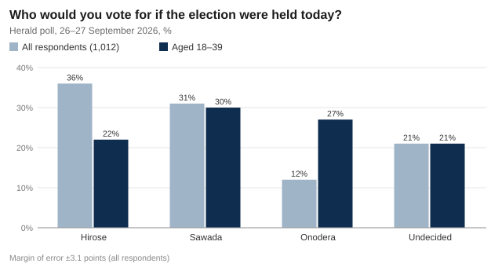
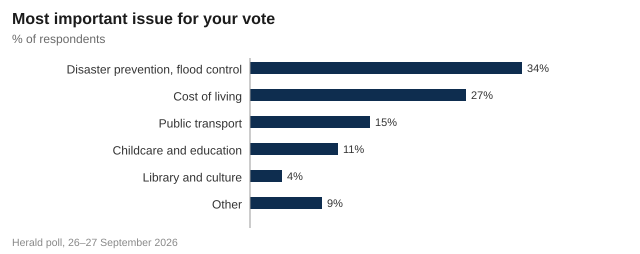

Herald poll: Hirose leads Sawada by five points, but one voter in five is undecided
Mayor Takuya Hirose is ahead in his bid for a third term, according to a Herald poll of 1,012 voters, but challenger Michiko Sawada leads among voters under 40, and flood control is the issue that matters most with five weeks to go.
Mayor Takuya Hirose holds a five-point lead over former prefectural assembly member Michiko Sawada in the race for Springvale City Hall, according to a poll conducted for The Springvale Herald on 26 and 27 September.
Asked whom they would vote for if the election were held today, 36% of respondents chose Mr Hirose, 63, who is seeking a third four-year term. Ms Sawada, 55, was backed by 31%, and Ryo Onodera, 42, a former software company manager standing for the first time, by 12%. A further 21% said they had not decided.
The lead is larger than the poll's margin of error of plus or minus 3.1 points, but with one voter in five undecided and the official campaign not starting until 1 November, the race remains open.

A different race among younger voters
The picture changes sharply among respondents aged 18 to 39. In that group Ms Sawada leads with 30%, followed by Mr Onodera on 27%, with Mr Hirose third on 22%. The share of undecided voters, 21%, is the same as in the poll as a whole.
Hirose's lead rests on older voters, who turn out. Onodera is the wild card: if he holds a quarter of the under-40s, he takes votes Sawada needs.
Mai Kuroki, associate professor of political science, Springvale University
Mr Onodera, who has no party or council group behind him, has campaigned mostly online, promising to put every city procedure online by 2028 and to cut the mayor's pay by 30%.
Floods first, then the cost of living
Asked which issue mattered most for their vote, 34% chose disaster prevention and flood control, ahead of the cost of living (27%), public transport (15%), childcare and education (11%) and the library and culture (4%). Nine per cent named another issue.

The September 2021 flood, when the Mirror River overtopped at Shimo-Kawabata and flooded 1,140 homes, still shapes local politics. Among respondents who put flood control first, Mr Hirose led with 44%, ahead of Ms Sawada on 29%. Among those who named public transport, Ms Sawada led with 47%.
Ms Sawada has made the cost of getting around part of her campaign: she has promised half-price RideCard fares for residents aged 70 and over, paid by the city. Mr Hirose's campaign says the pledge has not been costed.
The candidates
All three have announced their candidacy as independents. Mr Hirose is backed by the two largest council groups, the Civic Club and Mirai Springvale; Ms Sawada by the Mirror Citizens' Network.
| Candidate | Age | Background | Support | Main pledges |
|---|---|---|---|---|
| Takuya Hirose | 63 | Mayor since 2018 (two terms); city official for 28 years before that | Independent; backed by the Civic Club and Mirai Springvale council groups | Finish the embankment and the Shimo-Kawabata pump station; open the new library; bring investment to Ferry Port |
| Michiko Sawada | 55 | Member of the Harvest Prefectural Assembly 2011–2023 (three terms) | Independent; backed by the Mirror Citizens' Network | Half-price RideCard fares for residents aged 70 and over, paid by the city; free school lunches; review the water rate rise |
| Ryo Onodera | 42 | Former manager at a software company; first-time candidate | Independent; no organised backing | All city procedures online by 2028; cut the mayor's pay by 30%; revive the old town |
Official campaign: 1–7 November. Early voting: 2–7 November at City Hall and five branch offices.
Five weeks is a long time. I will take the result as a reminder that nothing is won yet, and keep explaining what we have done on the river.
Takuya Hirose
A five-point gap with a fifth of voters undecided is a race we can win. People are tired of being told fares and water bills are someone else's problem.
Michiko Sawada
Mr Onodera said the poll showed that "a quarter of young people want something different from the two familiar names".
Turnout and the campaign
In 2022 Mr Hirose won re-election with 81,430 votes on a turnout of 41.8%. About 345,000 residents are eligible to vote this year. The official campaign runs from 1 to 7 November, and early voting is open from 2 to 7 November at City Hall and five branch offices.
The Herald will host a debate between the three candidates on Thursday 22 October at 19:00 at Springvale Civic Hall. Tickets are free and the debate will be streamed on our website.
Today the city council votes on the September supplementary budget and on the water rate rise, both of which Ms Sawada has criticised.
Comments 5
OldTownVoter
21% undecided is me. Hirose did the river work but the library cost a fortune. Sawada says half-price RideCard but how will she pay for it?
miyu_k
Under-40s actually polled! Onodera is the only one who talks about anything online. My whole office is voting for him.
ShiroyamaSenior
Phone polls only reach people who answer unknown numbers. That's not most young people, so I'd take the 27% with a pinch of salt.
river_first
Flood control at 34% is no surprise. Anyone who lived through 2021 votes on that and nothing else.
H.Nakano
Thanks for correcting the sample size. 1,012 vs 1,102 doesn't change much but good to see it fixed.